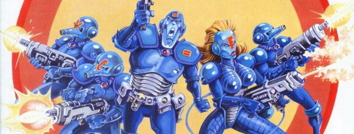

Honey, I Shrunk the Kids meets Saving Private Ryan, as the tiny pest control droids of Banzai Battalion go into action!
The first two tales are only tangentially linked, as they introduce a walled garden - The Fitz - an oasis within the bleak Mega-City One conurbation. It's only in a later tale that the Battalion make this their home.
Art by Ian Gibson
| Story Title | Parts | Pages | w indicates a wraparound coverCovers | Year(s) | Issues | Writer | Artist | Colourist | Letterer |
|---|---|---|---|---|---|---|---|---|---|
From Judge Dredd Banzai Battalion themselves do not feature.Beyond The Wall | 1 | 10 | 0 | 1986 | SFS9 | Alan Grant, John Wagner | Steve Dillon | <-- pp9-10, [b&w] | Tom Frame |
From Judge Dredd Banzai Battalion themselves do not feature.A Magic Place | 3 | 19 | 783: Simon Coleby 1 | 1992 | 783-785 | Garth Ennis | Steve Dillon: 1 Simon Coleby: 2‑3 various | Gina Hart | Tom Frame |
From Judge DreddBanzai Battalion | 3 | 18 | 1135: Greg Staples 1 | 1999 | 1135-1137 | John Wagner | Henry Flint | <-- | Tom Frame |
From Judge DreddNo Man's Land | 3 | 18 | 1185: Cliff Robinson & Chris Blythe 1 | 2000 | 1183-1185 | John Wagner | Cam Kennedy | Chris Blythe | Tom Frame |
| The Fitz | 6 | 36 | 1257: Ian Gibson 1260: Jock & Chris Blythe 2 | 2001 | 1257-1262 | John Wagner | Ian Gibson | Len O'Grady | Tom Frame |
| Save the Fitz | 1 | 10 | 0 | 2002 | p2003 | John Wagner | Ian Gibson | Len O'Grady | Tom Frame |
| Robot Wars | 6 | 36 | 1501: Cliff Robinson 1 | 2006 | 1501-1506 | John Wagner | Steve Roberts | <-- | Simon Bowland |
From Judge DreddPlanted | 2 | 20 | M406: Cliff Robinson & Dylan Teague (C) 1 | 2019 | M405-M406 | Rory McConville | Dan Cornwell | Jim Boswell | Annie Parkhouse |
| year | episodes | pages |
| 1984 | 0 | 0 |
| 1985 | 0 | 0 |
| 1986 | 1 | 10 |
| 1987 | 0 | 0 |
| 1988 | 0 | 0 |
| 1989 | 0 | 0 |
| 1990 | 0 | 0 |
| 1991 | 0 | 0 |
| 1992 | 3 | 19 |
| 1993 | 0 | 0 |
| 1994 | 0 | 0 |
| 1995 | 0 | 0 |
| 1996 | 0 | 0 |
| 1997 | 0 | 0 |
| 1998 | 0 | 0 |
| 1999 | 3 | 18 |
| 2000 | 3 | 18 |
| 2001 | 6 | 36 |
| 2002 | 1 | 10 |
| 2003 | 0 | 0 |
| 2004 | 0 | 0 |
| 2005 | 0 | 0 |
| 2006 | 6 | 36 |
| 2007 | 0 | 0 |
| 2008 | 0 | 0 |
| 2009 | 0 | 0 |
| 2010 | 0 | 0 |
| 2011 | 0 | 0 |
| 2012 | 0 | 0 |
| 2013 | 0 | 0 |
| 2014 | 0 | 0 |
| 2015 | 0 | 0 |
| 2016 | 0 | 0 |
| 2017 | 0 | 0 |
| 2018 | 0 | 0 |
| 2019 | 2 | 20 |
| 2020 | 0 | 0 |
| 2021 | 0 | 0 |